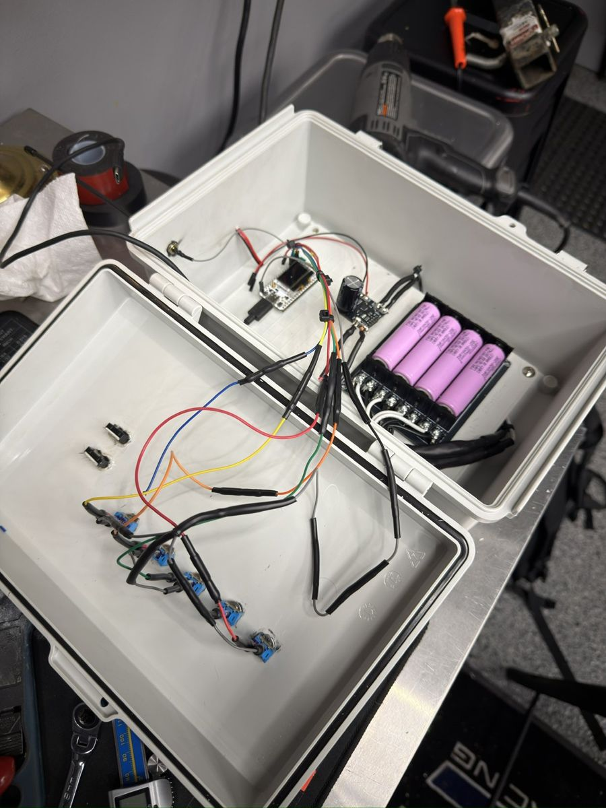
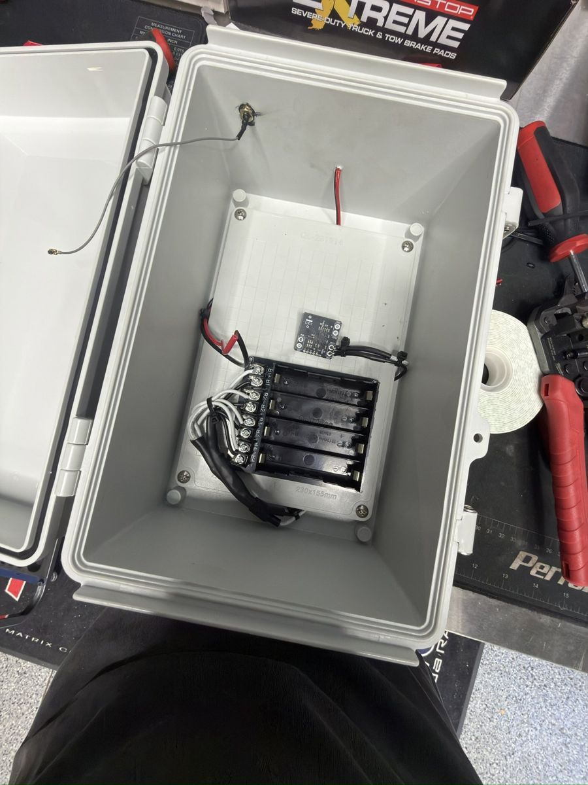
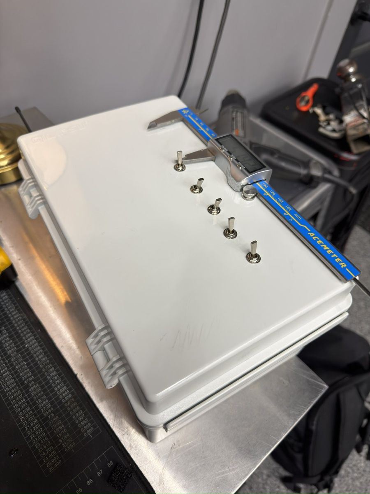
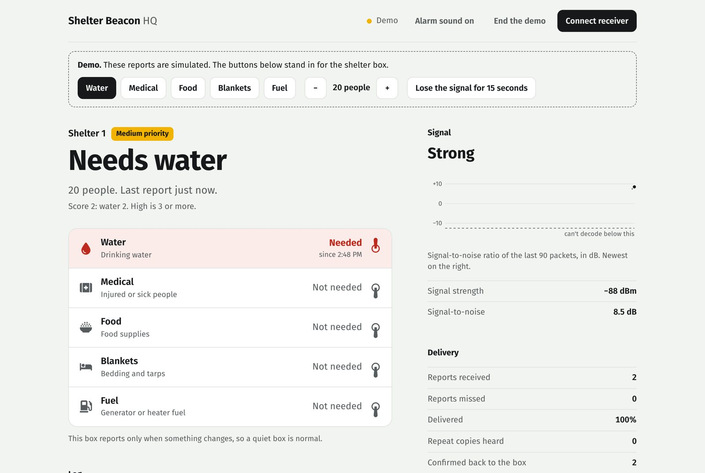

Built, broke, fixed. In that order.
Most of what's good about the current design came from something going wrong. This is the honest sequence, failures included.
-
First range test
Two radio boards, one walking away from the other, sending a packet every 2.2 seconds.
What broke: 4.3% of packets vanished at the edge of range, and one stretch of nearly seven minutes lost everything.
What changed: every report is now sent three times with the same number, and headquarters throws away the repeats. The data is on the testing page.
-
Stopped talking when there's nothing to say
The box had been beaconing every two seconds. That burned battery and airtime to repeat itself.
What changed: it now reports only when a switch or the people count changes.
-
No switch worked
Everything was mounted in the enclosure, wired, and powered. Not one switch registered.
What broke: the header pins on the board had never been soldered. They were sitting in the holes, touching nothing. A continuity meter showed an open circuit on every one.
What changed: a pre-soldered board, and checking continuity before software from then on.

-
It dropped out on battery
On USB it was fine. On the battery pack it reset.
What broke: a lithium pack gives 3.7 to 4.2 V, and it was feeding a pin that wants about 5.
What changed: the newer V4.3 board tolerates it and ran a full expo that way. A small boost converter is still planned so it isn't running on margin.

-
The new board used my pins for itself
Swapping to the V4.3 board should have been a drop-in. Three of the five switches stopped working.
What broke: the V4.3 adds a radio amplifier and uses three of the same pins my switches were on to control it.
What changed: the inputs moved to free pins, and the firmware now switches the amplifier on before it starts the radio.
-
Both people-count wheels snapped
The original design used two small thumbwheels to dial in 00 to 99.
What broke: the pins on both, during wiring. Replacements arrived in time and worked at the expo, but it showed how fragile and fiddly they were.
What changed: a note to find something sturdier. It became the knob, four days later.

-
First expo
It ran all day on its battery with every switch live. The two things people asked about most were range and how someone would actually use it.
What changed: those two questions set the plan for everything after: a GPS range test, and a rethink of the face of the box.
-
The box learned to wait for an answer
Three copies can't cross a long blackout, and the person at the box had no way to know whether anyone heard them.
What changed: headquarters now confirms each report. The box beeps twice when it's confirmed, and keeps retrying by itself when it isn't. Headquarters got an alarm for high-priority shelters.
-
A knob replaced the thumbwheels
Nobody in a shelter knows whether there are 37 people or 41, and tiny wheels are hard to turn with cold hands.
What changed: one big knob with eleven clicks: 0, 5, 10, 15, 20, 30, 40, 50, 60, 80, 100+. Faster, sturdier, and honest about how precise the number is. It waits a second and a half after you stop turning before it sends.
-
One list, on the box and on the screen
The dashboard looked like a dashboard: tiles, colours, jargon. The box had label-maker labels.
What changed: both were redrawn around the same five-row list in the same order, with one red that only means "needed." The switch that used to say "Shelter" now says "Blankets," because a shelter asking for shelter made no sense.

-
Still to do
A GPS-tagged range test. The confirm-and-retry firmware on real radios. A new enclosure with the printed face and the knob. Five people trying it cold, timed. After that: a sleep mode for months of battery life, a Japan-legal 920 MHz radio, and repeaters for valleys.